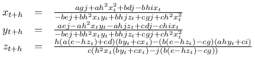

Nachdem ich erfolgreich einige chaotische Systeme mittels numerischer Verfahren untersucht hatte, reifte in mir der Entschluss, für diese Systeme implizite und explizite numerische Verfahren gegenüberzustellen.
Wie sich der Leser vielleicht noch erinnert, sind numerische Verfahren zur Lösung von Differentialgleichungen
nichts anderes als Differenzenverfahren oder - anders gesagt - wird die Lösung stückweise approximiert: Man berechnet
auf die eine oder andere Weise den Anstieg der Funktion in einem Punkt und nimmt an, dass die Funktion in einem hinreichend
kleinen Intervall hinreichend linear verläuft. Dann berechnet man den Wert der Funktion am Ende des Intervalls aus dem
Wert am Anfang des Intervalls über den Anstieg (keine Angst - unten gibts Bilder...):
 Das ist die traditionelle Eulerformel für die numerische Lösung von Differentialgleichungssystemen. Wie bereits
hier
beschrieben hat dieses Verfahren (wie alle expliziten Verfahren) diverse Nachteile, die man mit der Benutzung des
impliziten Verfahrens umgehen kann:
Das ist die traditionelle Eulerformel für die numerische Lösung von Differentialgleichungssystemen. Wie bereits
hier
beschrieben hat dieses Verfahren (wie alle expliziten Verfahren) diverse Nachteile, die man mit der Benutzung des
impliziten Verfahrens umgehen kann:

Mein erster Versuch, chaotische Systeme mittels impliziter Verfahren zu behandeln, beschäftigte sich natürlich mit dem altbekannten
Lorenz-Attractor:
 mit
mit
 Daraus folgt für die Behandlung mit dem impliziten Eulerverfahren und einer Schrittweite (oder Intervallänge) h:
Daraus folgt für die Behandlung mit dem impliziten Eulerverfahren und einer Schrittweite (oder Intervallänge) h:
 und eingesetzt:
und eingesetzt:
 Und wegen der Übersichtlichkeit:
Und wegen der Übersichtlichkeit:
 Löst man dieses Gleichungssystem - und ich gebe zu, dass ich mich außerstande sah und Hilfe bei
SymPy
gesucht habe - kommt man auf ein Ergebnis für die Berechnung der drei Zustandsgrößen, das auf der Konsole - direkt von
SymPy - wie folgt aussieht:
Löst man dieses Gleichungssystem - und ich gebe zu, dass ich mich außerstande sah und Hilfe bei
SymPy
gesucht habe - kommt man auf ein Ergebnis für die Berechnung der drei Zustandsgrößen, das auf der Konsole - direkt von
SymPy - wie folgt aussieht:
from sympy import *
>>> x, y, z,a,b,c,d,e,f,g,h,i,j = symbols('x, y, z,a,b,c,d,e,f,g,h,i,j')
>>> linsolve ([a+b*y-c*x,d+e*x-h*x*z-g*y,i+h*x*y-j*z],(x,y,z))
{((a*g*j + a*h**2*x**2 + b*d*j - b*h*i*x)/(-b*e*j + b*h**2*x*y +
b*h*j*z + c*g*j + c*h**2*x**2), (a*e*j - a*h**2*x*y - a*h*j*z +
c*d*j - c*h*i*x)/(-b*e*j + b*h**2*x*y + b*h*j*z + c*g*j +
c*h**2*x**2), (h*(a*(e - h*z) + c*d)*(b*y + c*x) - (b*(e - h*z) -
c*g)*(a*h*y + c*i))/(c*(h**2*x*(b*y + c*x) - j*(b*(e - h*z) - c*g))))}
>>>
Eindrucksvoll und dennoch verwirrend - daher habe ich es hier nochmal aufbereitet:

Die hier gezeigten Darstellung veranschaulichen den Vorteil des impliziten Eulerverfahrens noch einmal schön: Als Referenz habe ich den Lorenzattractor mit einem adaptiven, expliziten Cash-Karp-Solver bis zu t=30 berechnet. Das benötigte 10000 Schritte - damit war die optimale durchschnittliche Schrittweite mit h=0.003 ermittelt.
Daraufhin berechnete ich zunächst das System mit dem expliziten Eulerverfahren und unterschiedlichen Schrittweiten bis zu t=30. Die Darstellungen zeigen die Änderungen im Ergebnis für h= 0.003, h=0.006, h=0.02, h=0.03. Man kann erkennen, dass bereits bei h=0.02 die qualitativen Aussagen des Ergebnisses fast gar nicht mehr mit dem "Original" in Einklang zu bringen sind. Bei h=0.03 schließlich kann keine Lösung mehr ermittelt werden.
Das letzte Bild stellt das Ergebnis des impliziten Verfahrens mit einer Schrittweite h=0.03 dar - man sieht, dass die Lösung qualitativ noch sehr nahe am Original liegt. Damit ist einmal mehr bewiesen, dass man sich für die numerische Lösung von Differentialgleichungssystemen der Mühe unterziehen sollte, das implizite Eulerverfahren zumindest in Betracht zu ziehen.